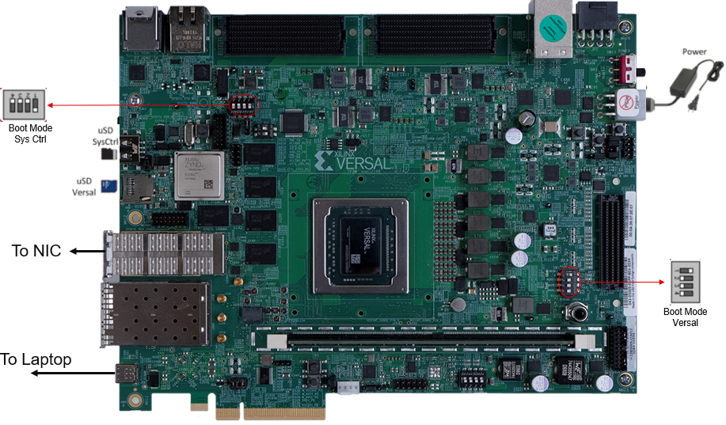

Versal Prime - VCK190 Evaluation Kit Ethernet TRD Tutorial |
Board Setup and Application Deployment |
Setting up the Board and Application Deployment¶
Introduction¶
This document shows how to set up the board and run the Ethernet TRD application with prebuilt images.
Prerequisites¶
Reference design
vck190_ethernet_trd_prebuilt_2023.1.zipfileVCK190 Evaluation Board
Terminal emulator, for example:
Windows: teraterm (https://osdn.net/projects/ttssh2)
Linux: picocom (https://github.com/npat-efault/picocom/releases)
Disk Imager utility, for example
Host Machine with 4 x 10G/25G NIC
100G QSFP28 to 4 x 25G SFP28 cable
Iperf3 application
Board Setup¶
The following figure shows how to set up the VCK190 evaluation board.

Board jumper and switch settings
This is a one-time setup and the board should have been delivered to you with this default setting, however it is good to double check for the first time when you get the board.
Make sure you remove J326 (7-8) jumper.
Setup SYSCTRL Boot mode switch SW11 to (ON,OFF,OFF,OFF) from switch bits 1 to 4 as shown in the above picture.
Make sure you have the uSD card with the SYSCTRL image inserted in the uSD SysCtrl slot.
It is recommended to use the latest SYSCTRL image.
Setup Versal Boot Mode switch SW1 to (ON,OFF,OFF,OFF) from switch bits 1 to 4 as shown in the above picture.
External NIC to VCK190 connection
Connect a QSFP to SFP cable from VCK190 QSFP Port (J288) to Host Machine NIC SFP Port.
Serial console settings
VCK190 comes with a USB-C connector for JTAG+UART, when connected three UART ports should be visible in Device Manager:
Versal UART0
Versal UART1 &
System Controller UART
Connect a USB-C cable to the USB-UART connector. In a terminal emulator, connect to Versal UART0 using the following settings:
Baud Rate: 115200
Data: 8 bit
Parity: None
Stop: 1 bit
Flow Control: None
Flash the SD Card¶
Download the 2023.1 Pre-Built Package from TRD Home Page , unzip and save it on your computer.
Navigate to the directory containing the prebuilt images
../vck190_ethernet_trd_prebuilt_2023.1Connect the microSD to your computer.
Preparing the SD card, there are many options to format the SD Card in the windows tool. But, always format with FAT32 option. Use the SD Card Formatter tool to format the SD card SD Card Formatter
 .
.
Copy
BOOT.BIN , rootfs.cpio.gz.uboot , Image and boot.scrto microSD card.Eject the SD card from your computer.
Connect the microSD card to the Board.
SD Boot mode:¶
Power on the board in SD boot mode.
GT Reference clocks¶
The GT Reference clocks required for the design are configured by the IDT drivers.
Note: Board UI is not required in the 2023.1 release.
Run Host and VCK190 applications¶
Once the host and VCK190 are booted, set up an IP address for each ethernet port and make sure the Ethernet link is established using ping. Do not proceed until you are able to ping each interface.
>ifconfig <interface_name> down
>ifconfig <interface_name> up
Note: While making the interface up, make sure a valid IP address is set for the interface.
Iperf Commands¶
Execute the following command to start iperf3 server
iperf3 -s -p <port_no> -i 60
Execute the following command to start iperf3 client, this will start the traffic.
TCP: iperf3 -c <host_interface_IP> -T -p <port_no> -t 60 -i 60
UDP: iperf3 -c <host_interface_IP> -T -u -p <port_no> -t 60 -i 60
PTP commands¶
Two Step PTP¶
VCK190> ptp4l -i eth0 -m
Link partner> ptp4l -i <interface_name> -m -s
or vice versa
One Step PTP¶
PTP with 1 step E2E:
Link partner> ptp4l -i
-m -f /usr/bin/default_onestep.cfg VCK190> ptp4l -i eth0 -s -m -f /usr/bin/default_onestep.cfg
or vice versa
PTP with 1 step P2P:
Link partner> ptp4l -i
-m -f /usr/bin/default_onestepp2p.cfg VCK190> ptp4l -i eth0 -s -m -f /usr/bin/default_onestepp2p.cfg
or vice versa
Dynamic switching between 10G <-> 25G¶
Note: By default the interface links up at 25G.
Note: a) For dynamic switching between 10G/25G speed, make sure autonegotiation is ON for the particular interface on the NIC example command to switch ON autonegotiation: ethtool -s
speed <10000/25000> autoneg on b) After switching, please expect a delay (~2s) for MRMAC block lock to complete and Link to be detected. c) If the block lock does not happen- immediately, try making the interface down and up to achieve block lock.
To switch between 10G and 25G speeds dynamically use the following commands:
10G -> 25G:¶
>ifconfig <interface_name> down
>ethtool -s <interface_name> speed 25000
>ifconfig <interface_name> up
25G -> 10G:¶
>ifconfig <interface_name> down
>ethtool -s <interface_name> speed 10000
>ifconfig <interface_name> up
Next Steps¶
Go back to the VCK190 Ethernet TRD design start page
License¶
Licensed under the Apache License, Version 2.0 (the “License”); you may not use this file except in compliance with the License.
You may obtain a copy of the License at http://www.apache.org/licenses/LICENSE-2.0
Unless required by applicable law or agreed to in writing, software distributed under the License is distributed on an “AS IS” BASIS, WITHOUT WARRANTIES OR CONDITIONS OF ANY KIND, either express or implied. See the License for the specific language governing permissions and limitations under the License.
Copyright© 2022 Xilinx